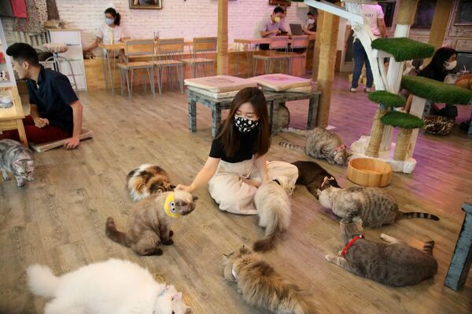

О нас
Добро пожаловать в «Мур-мур» — место, где аромат свежего кофе сливается с уютным мурлыканьем, а каждое утро начинается с тепла в сердце.
Наша кофейня создана для тех, кто ценит не только вкус идеально приготовленного капучино, но и моменты тихого счастья. Здесь вы встретите наших главных вдохновителей — пушистых хозяев заведения.
Мы тщательно выбираем зерна со всего мира, экспериментируем с авторскими рецептами и печем десерты, которые покорят даже самых взыскательных сладкоежек. А еще верим, что кофе вкуснее, когда рядом тихо мурлычет друг.
Приходите в «Мур-Мур», чтобы зарядиться энергией, обнять кота, укутаться в плед с книгой или просто помечтать у окна. Здесь время течет иначе — не спеша, с любовью и настойчивым требованием «погладь меня».
*P.S. Не забывайте проверять карманы: наши хвостатые бариста иногда прячут там сюрпризы ;)*
